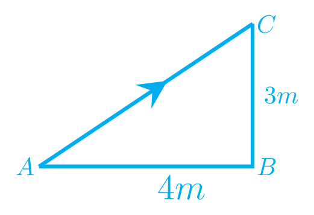
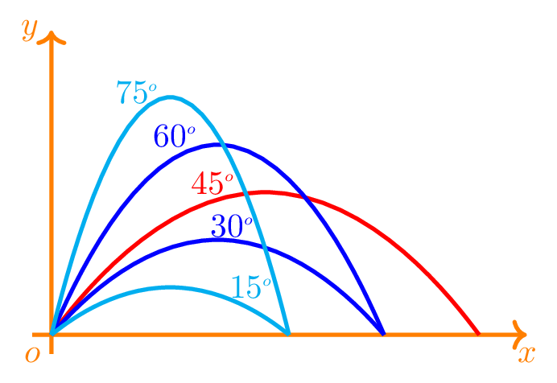

Distance: It is the length between the change in positions of an object. If \(x_{i}\) is an initial position of the object and \(x_{f}\) is a final position of that object then \(x_{f}-x_{i} =d, \) is the distance travelled by the object. It is a scalar quantity because it does not deal with the direction in which the object is travelling.It's unit is \(m\) in SI system and \(cm\) in CGS system, and \(ft\) in FPS system.
Displacement: It is a direct distance between initial and final position of the object. It is the shortest path between initial and final positions of the object. It has the same unit as distance. It is a vector quantity because it has only one particular direction between the initial and position of the object. Let's understand by the example here, suppose you started travelling from initial point A and reached to point B by travelling 4 m distance along east. Now from point B you covered a distance of 3 m along north to reach to your final point C. So the direct distance between your initial position and final position is 5m given by Pythagoras theorem along north-east. \(\therefore\) Displacement, AC=\(\sqrt{4^2+3^2}=5m\text{.}\) See the figure below as reference.

Figure2.1.0.1.Displacement vector
Speed:The rate of change of position of an object is called a speed. It states that how fast the object is changing its position with respedt to time. In physics, the rate means with respect to time. It is also a scalar quantity. speed is represented by the letter, \(v\text{.}\) If \(x_{i}\) is an initial position and \(x_{f}\) is the final position of the object then \(v=\frac{x_f-x_i}{t_f-t_i} = \frac{d}{t}\text{.}\) It's unit is m/s in SI system and cm/s in CGS system, and ft/s in FPS system.
Velocity: It is the speed of an object in particular direction. It is a vector quantity. It has the same unit as speed. It is also represented by the letter, \(v\text{.}\)
Acceleration: The rate of change of velocity is called an acceleration. It states that how fast the velocity of an object is being changed. It is also a vector quantity. If \(v_{i}\) is an initial velocity and \(v_{f}\) is the final velocity of the object then the acceleration of the object is given by \(a=\frac{v_f-v_i}{t_f-t_i} = \frac{v}{t}\text{.}\) It's unit is \(m/s^2\) in SI system. If acceleration is positive then the object is speeding up, if it is negative then the object is slowing down, if it is zero then the object is either moving with uniform velocity or remains at rest. Note: Velocity is always in the same direction as the object is moving, but the acceleration is not.
Vector quantity carries two pieces of information, i.e. magnitude and direction. Vector is often represented by an arrow. A straight line with an arrowhead where the length of the line yields information about MAGNITUDE and the arrow indicates the DIRECTION. Mathematical operation is different for vectors than in scalars. It is not just the addition or subtraction of the numbers. We are not going to perform many vector mathematical operations here rather we try to understand addition and subtraction with some simple examples. Addition or subtraction of scalar quantities are just like adding or subtracting the numbers. In vector addition, the vectors are arranged in “HEAD TO TAIL” to find the sum of the vectors. In vector subtraction, the vector to be subtracted is flipped in direction and added to the other vector by arranging them in “HEAD TO TAIL” to find the sum of the vectors.
For example: in Figure 2.1.0.1, the total distance travelled by the object is \(4m+3m = 7 m.\) However, total displacement of the object is only \(5m\) along north-east directin as shown by the arrow AC.
Suppose water is flowing downstream with velocity 2 \(m/s \) in a river where you are rowing your boat with 5 \(m/s \) downstream. You can find that you are moving with 7 \(m/s\) velocity (or speed) downstream. If you want to go upsteam then your velocity (or speed) would be 3 \(m/s\) only. If you want to row accross the river then your velocity would be somewhere between 3 \(m/s\) to 7 \(m/s\text{.}\)
Suppose Aron is sweeming in a pool of 100 m wide. He took 5 laps, so he covers total of \(100\times5\times2=1000 m\) but his displacement is just zero. Remember one lap is one complete round of trip. However, if he just take a half lap then the distance covered is the same as displacement and are 100 m.
Subsection2.1.1Equations of Motion
There are three equations of motion defined by the above terminologies which can help solve problems of motion. These eqations are obtained by manipulating average velocity and acceleration of the object.
Equations of motion in horizontal direction: Section 2.3
\(v_{f}=v_{i}+at\text{.}\)
\(v^2_{f}=v^2_{i}+2ad\text{.}\)
\(d=v_{i}t+\frac{1}{2}at^2\text{.}\)
Equations of motion in vertical direction: Section 2.3
\(v_{f}=v_{i}+gt\text{.}\)
\(v^2_{f}=v^2_{i}+2gh\text{.}\)
\(h=v_{i}t+\frac{1}{2}gt^2\text{.}\)
Note: The above equations only work for constant acceleration or acceleration due to gravity.
Here, \(g\) = acceleration due to gracvity, \(h\) = height attains be the object, and \(t\) = time taken by the object during its motion.
In vertical direction earth plays a vitol role in the acceleration of object motion. Earth pulls every thing downwards which causes acceleration due to gravity, \(g\) negative. Accleration due to gravity is the acceleration of the object caused by the earth gravitational field. The value of \(g =9.8 m/s^2.\text{.}\) In vertical motion, we consider height as positive if going up (y-axis) and height as negative if coming down. But here, we are taking \(g = -9.8 m/s^2.\) if the object is going vertically up, and \(g =+9.8 m/s^2.\) for the object falling down. Such conventions allow us to assume h as always positive.
Subsection2.1.2Free Fall
Objects moving under the influence of gravity only is called a free fall. This means gravity causes a change in the velocity of any object by 9.80 \(m/s\) every second. So, drop any object and let it fall toward the ground: After 1s, the speed of the object is 9.80 \(m/s\text{.}\) After 2s, the speed of the object is 19.6 \(m/s\text{.}\) Etc. According to Galileo the velocity of a falling object is proportional to the length of time that the object has been falling. From the first equation of motion \(v_f-v_i=gt\) or, \(v=gt, \quad \therefore v\propto t, \quad \) as \(g\) is constant. Hence, the object is falling with higher velocity if it is falling for a long time or from a higher position. Since \(g\) is constant near the planet all objects fall at the same rate. (Assuming there is no air resistance).
Subsection2.1.3Projectile Motion
In normal day life, we encounter many examples where object moves along both horizontal and verticle direction together. Such type of motion is called projectile motion and the object moving in projectile motion is called a projectile. Hence, projectile is an object which has both horizontal as well as vertical motion. The path taken by the projectile is parabolic in nature. We are not dealing with mathematical operation related to projectile motion here but we try to understand the projectile motion by the following figure.

Figure2.1.3.1.Projectile motion Since gravity only acts on the verticle direction the horizontal velocity remains constant always in projectile motion.